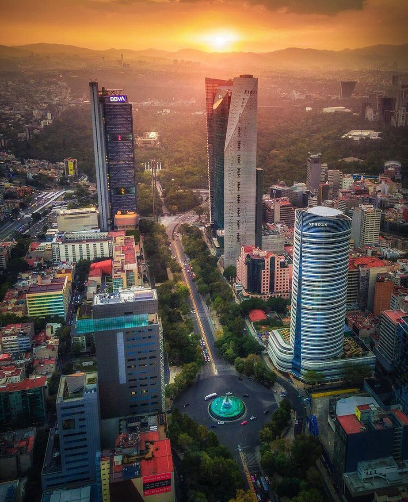

Reforma
El paseo de la Reforma es la avenida más importante y emblemática de la Ciudad de México. Su extensión supera los 12 kilómetros, también se considera como una de las más grandes. Nació bajo el nombre de Paseo de la Emperatriz hasta que finalmente adoptó el nombre de Paseo de la Reforma. Las estatuas que bordean este paseo son 77 y están divididas en dos grandes etapas; la primera concluida en el siglo XIX y la segunda en el siglo XX, cuyos trabajos se realizaron en la zona sur y en la zona norte del Paseo de la Reforma.